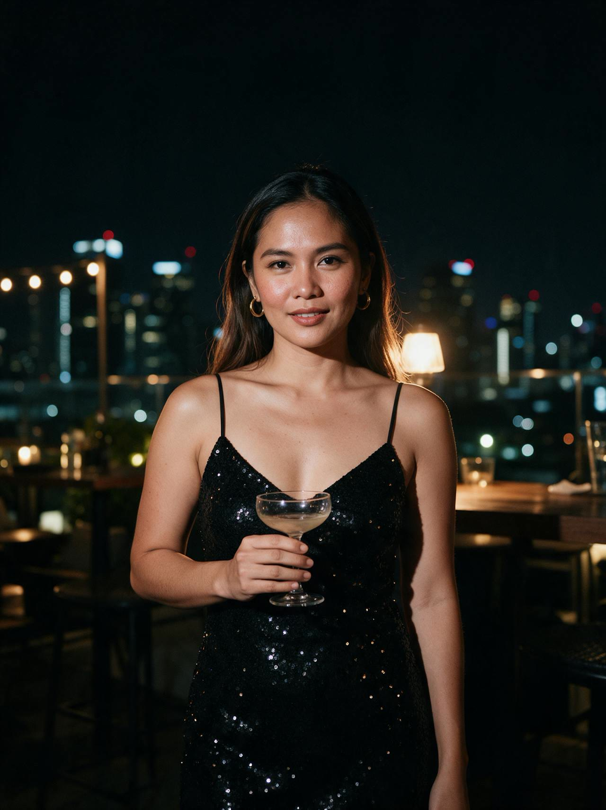
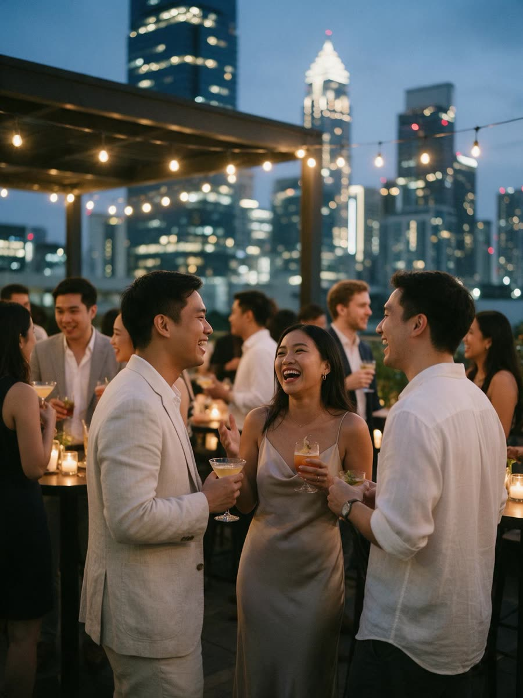
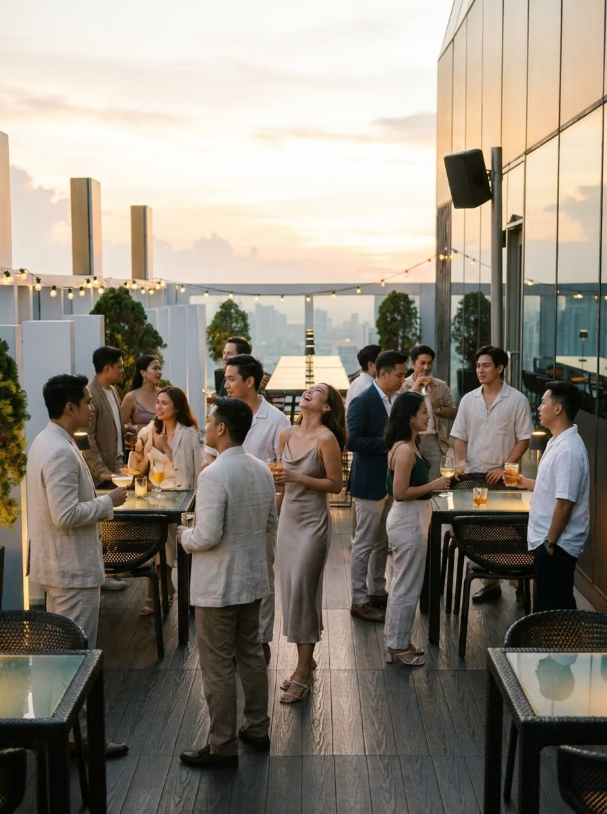
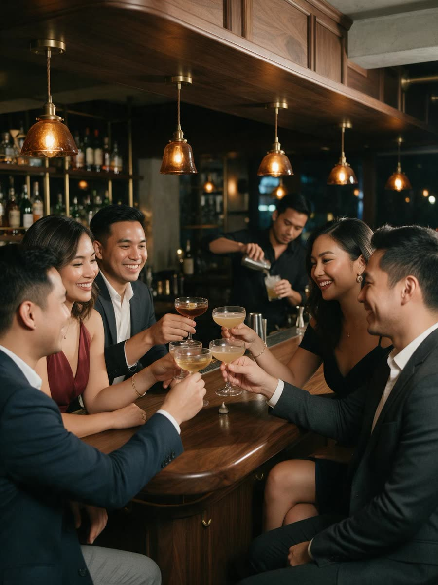
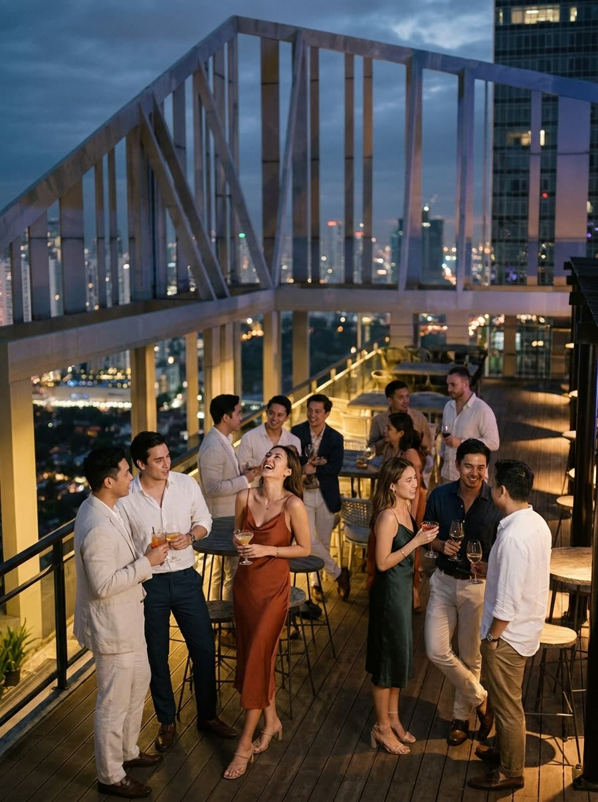
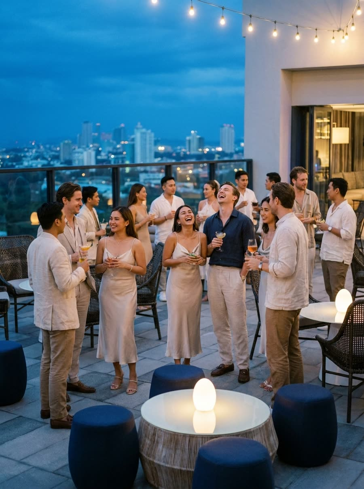
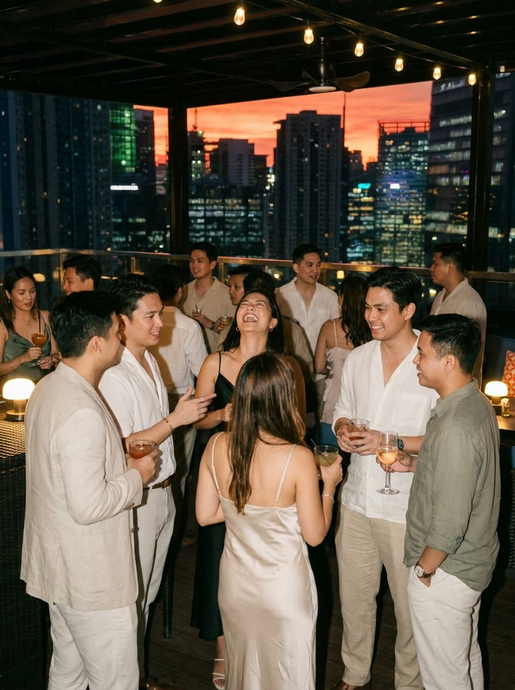

The latest
Good living in Manila, newest first: openings, nights, awards, fashion, food, travel.

open
Every night is an issue. Every venue gets a cover. You pick the next one.
Party Life MNL covers the rooms that run Manila after dark, hosts its own capped nights, and puts the readers in charge of where the next cover is shot. Issue 01 is The Guest List: eighty people, a rooftop in BGC, two drinks in, a host who does the introductions.
- Issue 01
- The Guest List, rooftop, BGC. Date goes to the list first.
- Spots
- 80, no walk-ins, 21 and over.
- Price
- ₱1,500 with your first two drinks.
From issue 01
Field guides to the rooms, the manifesto, and how the night works. New articles land with every issue.

Why Manila nightlife needed a magazine
The venues have the audiences. The hosts have the DMs. Nobody had the story of the rooms, until now.

The Palace, BGC: four rooms, one roof
Yes Please, Revel, Clubhouse and Medusa, what each night is for, and what happened to XYLO.

Poblacion after midnight
Apotheka and the collectives, the bars, and the Thursday-to-Saturday rhythm of Manila's loosest neighbourhood.

Five bars above the skyline
Antidote, Straight Up, O2, The Peak and Vu's, and why The Guest List starts up here.

How The Guest List works
From the DM to the door to the recap, for someone coming alone for the first time.
Just opened in Manila
Problem Child to Makati Central Square: what opened, what closed, and where to go first.
The rooms we are watching
Ibiza, Bangkok, Singapore, London, New York: the openings, the lists, and where Manila ranks.

What a venue gets from an issue
A capped room at a quiet hour, a cover with your name on it, and a guest list you keep.
The rooms
The venue index, read from public profiles on 19 October 2026. Every one of them is a future cover. Vote by DM; the venue with the most votes gets Issue 02.
| Venue | Area | Type | Issue | ||
|---|---|---|---|---|---|
| Antidote | Poblacion edge, Makati | Rooftop, two decks | @antidotebarph | Issue 01 candidate | Vote |
| Straight Up | Seda, BGC | Rooftop | @straightupatseda | Issue 01 candidate | Vote |
| O2 Rooftop | Brittany, BGC | Rooftop | @o2rooftopbar | Issue 01 candidate | Vote |
| The Peak | Grand Hyatt, BGC | Rooftop | @thepeakmanila | Issue 01 candidate | Vote |
| Yes Please | The Palace, BGC | Cocktail bar with DJs | @yespleaseph | Open | Vote |
| Revel | The Palace, BGC | Lounge | @revelatthepalace | Open | Vote |
| Clubhouse | The Palace, BGC | Nightclub | @clubhousemnl | Open | Vote |
| Medusa | The Palace, BGC | Supper club | @thepalacemanila | Open | Vote |
| XYLO | The Palace, BGC | Superclub | — | Closed Jan 2026 | |
| Apotheka | Poblacion, Makati | Club | @apothekamanila | Open | Vote |
| TOPIC | Poblacion, Makati | Club | @topicmnl | Open | Vote |
| Black Market | Makati | Club | @blackmarketmnl | Open | Vote |
| Nokal | Makati | Club | @nokal.manila | Open | Vote |
| Bombvinos Bodega | Makati | Bar and venue | @bombvinos.bodega | Open | Vote |
| Cove Manila | Okada, Parañaque | Club | @covemanila | Open | Vote |
| Vu's Sky Bar | Marco Polo, Ortigas | Rooftop | @marcopolomanila | Open | Vote |
Just opened
Late 2025 to October 2026, from the Party Life database. Months are the month the press covered the opening; handles print only where verified.
| Room | Area | What | Opened | |
|---|---|---|---|---|
| Loading from the database. | ||||
Read the roundup, including what closed.
The world column
Where Manila ranks, what opened abroad, and the nights worth a flight. Updated with every issue.
Asia's 50 Best Bars 2026
Problem Child, Makati, No. 44 and best bar in the Philippines. The Spirits Library, Makati, No. 98. Bar Leone, Hong Kong, is No. 1 in the world for the second year.
Bangkok is No. 1
Time Out's resident survey put Bangkok first, Berlin second, New York third. Manila is not on the list. That is the job.
UNVRS, FVTURE, Zouk
Ibiza's new hyperclub went straight to No. 1 on DJ Mag. Bangkok opened a 6,000-capacity room. Zouk Singapore reopened all three rooms in 2026.
Nov 2026 to Apr 2027
Wonderfruit 3 to 7 Dec, Tomorrowland Thailand 11 to 13 Dec, Savaya Bali NYE with Carl Cox, Zamna Phuket 29 to 30 Jan, Ultra Miami 26 to 28 Mar.
You pick the next cover
Issue 02 goes where you send it
DM "VOTE" and the venue name to @partylifemanila. The room with the most votes by the end of Issue 01 gets the next cover, the next night and a month on the masthead strip. Votes are counted on the night and announced in the recap.
DM "VOTE"Be on the cover
A photographer shoots every night to the cover brief. Guests who want to be on the recap cover tell the host at the door. Tag @partylifemanila in your own photos from the night and the best one runs in the next issue.
Follow @partylifemanilaNeed a venue? Give us a shout.
We know the rooms, the managers and the terms. Tell us the night you have in mind and we arrange the details: venue, minimum spend, drinks package, door, photographer, guest list.
A birthday, a launch, a team night, a date you want to land
Send the date, the headcount, the neighbourhood and the budget per head. We come back within a day with three rooms that fit and what each one costs. No fee to ask.
DM "VENUE HELP"One issue a month, with your name on the masthead
A capped, ticketed room at a quiet hour, your handle in every post, a recap within 48 hours and a guest list you keep. Terms we are open to: minimum spend, a per-head drinks package, or a ticket split.